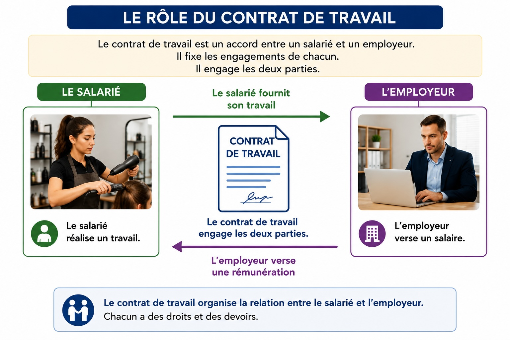
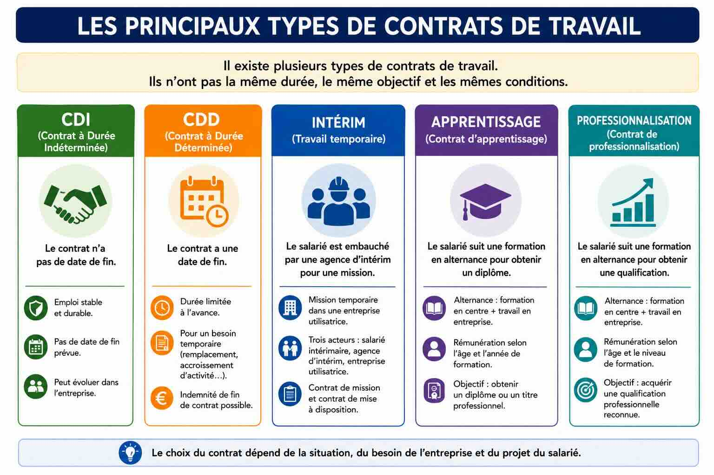
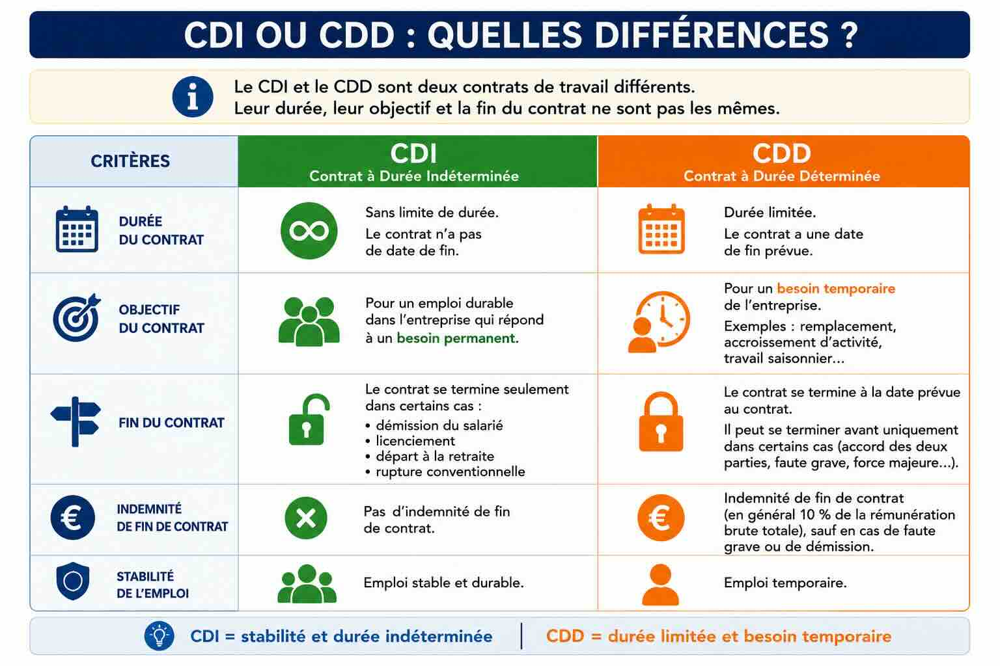
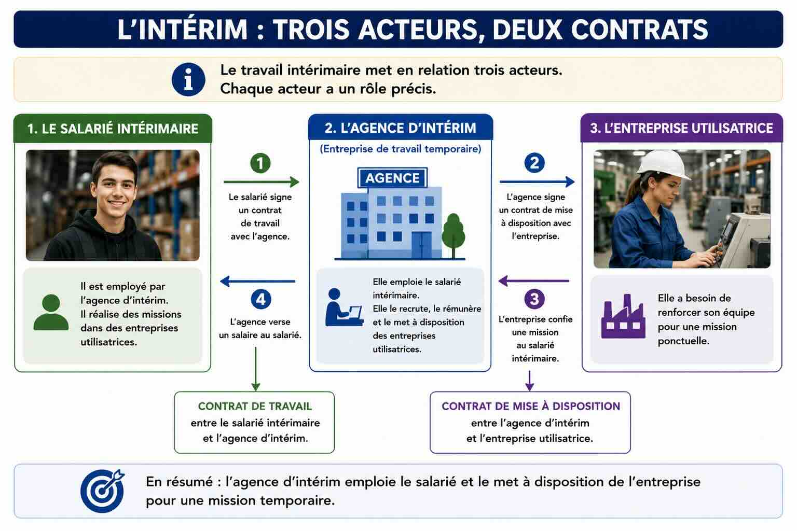
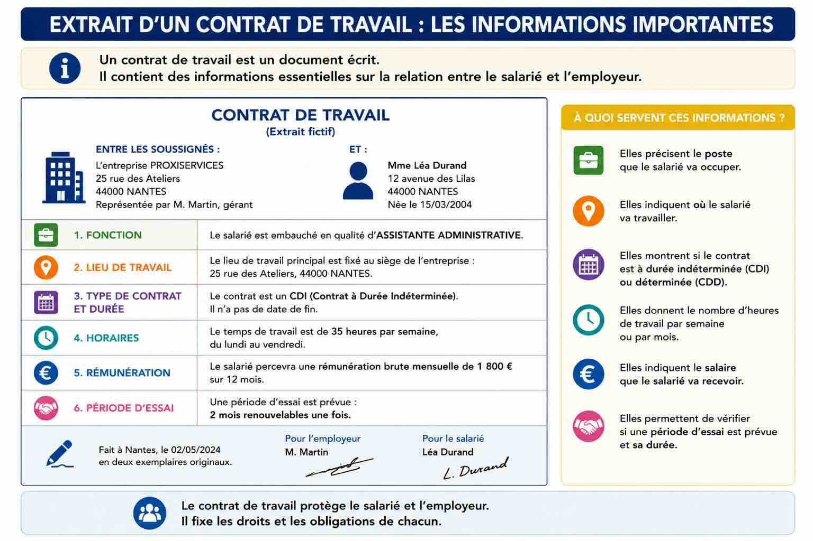
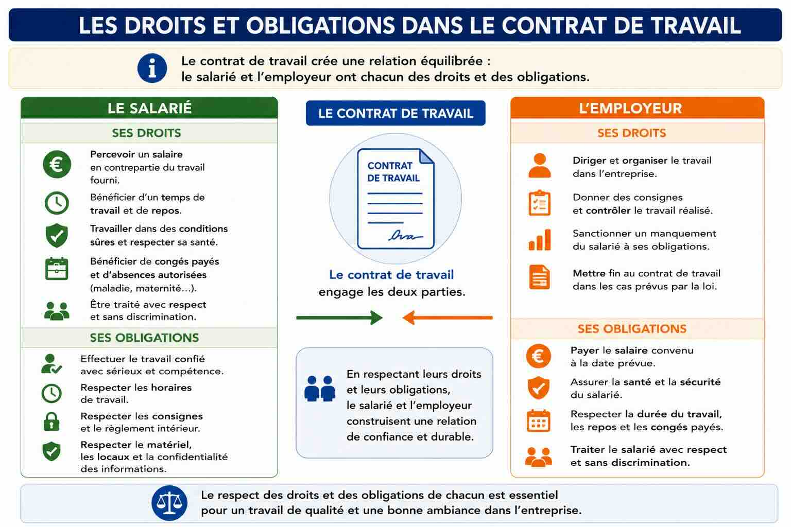
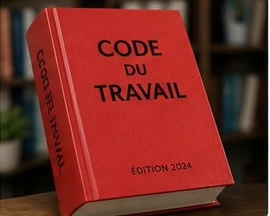
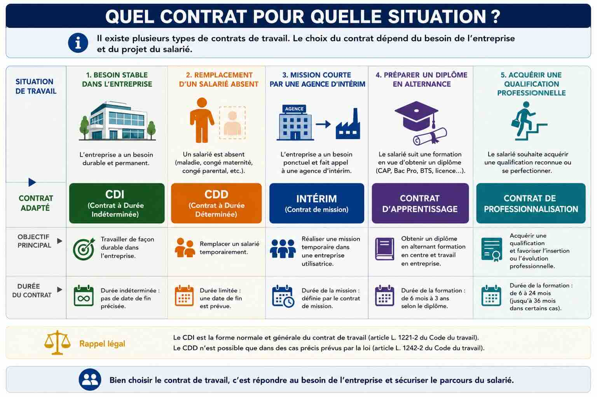

🎯 Objectif du moduleÊtre capable d'identifier les caractéristiques des différents contrats de travail et les droits et obligations de chacun.
C1C2C3C4C5
▾ Faites défiler pour commencer la séance 1
Module C1 · Thématique C
Séance 1 — Les contrats de travail
🎯 Objectif de la séanceÊtre capable d'identifier les spécificités des différents contrats de travail.
C1C2
Situation de départ — Dolane et Julien
Dolane et Julien ont 18 ans. Ils viennent de réussir leur CAP.
Dolane a un CAP coiffure. Elle veut travailler tout de suite. Un salon de coiffure de sa ville lui propose un poste pour une durée illimitée.
Julien, lui, hésite. Il aimerait continuer à se former pour obtenir un autre diplôme, mais il veut aussi travailler et gagner un salaire en même temps.
Tous les deux vont bientôt signer un contrat de travail. Mais ils connaissent mal les différents contrats. Ils se demandent : « Quel contrat est fait pour moi ? »
🔍 Analyser la situation
1C2
À partir du texte de la situation, compléter le tableau pour décrire la situation.
Quoi ? Deux jeunes vont signer un contrat de travail et cherchent quel contrat choisir.
Qui ? De qui parle la situation ?
Quand ? À quel moment de leur vie ?
Pourquoi ? Pourquoi doivent-ils faire un choix ?
Relisez le texte de la situation. Les réponses sont dans les phrases.
Décrire la situation (Qui ? Quand ? Pourquoi ?).
Corrigé : Qui ? Dolane (CAP coiffure) et Julien, deux jeunes de 18 ans. Quand ? Juste après la réussite de leur CAP. Pourquoi ? Ils vont signer un contrat de travail mais ne savent pas quel contrat choisir selon leur projet.
📌 Avant de choisir un contrat, il faut comprendre la situation de chaque personne : son métier, son projet et son besoin. C'est le rôle de l'analyse.
📚 Mobiliser les connaissances
Contrat de travail : accord entre un salarié et un employeur. Le salarié travaille, l'employeur paie un salaire.
CDI : Contrat à Durée Indéterminée. Il n'a pas de date de fin.
CDD : Contrat à Durée Déterminée. Il a une date de fin.
Intérim : mission courte. Le salarié est employé par une agence.
Alternance : on apprend un métier en partageant son temps entre l'école et l'entreprise.
DOC. 1 — Le rôle du contrat de travail

2.1C1
À partir du DOC. 1, identifier les deux personnes liées par le contrat de travail.
Dans un contrat, il y a toujours deux côtés. Exemple : dans un match, il y a deux équipes.
Regardez à gauche et à droite du document.
Les deux parties du contrat.
Corrigé : le salarié et l'employeur.
📌 Le contrat relie toujours deux parties : celui qui travaille (le salarié) et celui qui paie (l'employeur). Chacun s'engage envers l'autre.
2.2C1
À partir du DOC. 1, relever ce que fournit le salarié et ce que verse l'employeur.
Suivez les deux flèches du schéma.
Ce que chacun apporte.
Corrigé : le salarié fournit son travail ; l'employeur verse un salaire (une rémunération).
📌 C'est un échange : un travail contre un salaire. Le contrat met cet échange par écrit pour protéger les deux parties.
DOC. 2 — Les principaux types de contrats

3.1C1
À partir du DOC. 2, relever le contrat qui n'a pas de date de fin.
Cherchez la colonne verte.
Le contrat sans date de fin.
Corrigé : le CDI (Contrat à Durée Indéterminée).
📌 « Indéterminée » veut dire « qu'on ne connaît pas à l'avance ». Le CDI continue tant que personne n'y met fin : c'est le contrat le plus stable.
3.2C1
À partir du DOC. 2, identifier les deux contrats qui se font en alternance.
Cherchez les colonnes violette et turquoise. Ils parlent d'école + entreprise.
Les deux contrats en alternance.
Corrigé : le contrat d'apprentissage et le contrat de professionnalisation.
📌 Les deux mélangent école et travail. L'apprentissage sert surtout à obtenir un diplôme ; la professionnalisation, à obtenir une qualification.
DOC. 3 — Comparer le CDI et le CDD

4C2
À partir du DOC. 3, compléter le tableau de comparaison.
Durée du CDI : sans date de fin.
Lisez la colonne orange du tableau.
Les caractéristiques du CDD.
Corrigé : Durée du CDD : limitée, avec une date de fin. Besoin : temporaire (remplacement, surcroît de travail, saison). Le CDD donne droit à : une indemnité (prime) de fin de contrat.
📌 Le CDD répond à un besoin qui ne dure pas. Comme l'emploi est moins sûr, une prime de précarité est versée à la fin pour compenser.
DOC. 4 — L'intérim : trois acteurs

5C1
À partir du DOC. 4, indiquer qui emploie (qui paie) le salarié intérimaire.
Ce n'est pas l'entreprise où il travaille. Regardez l'acteur du milieu.
Qui emploie l'intérimaire.
Corrigé : l'agence d'intérim (l'entreprise de travail temporaire).
📌 C'est particulier : le salarié travaille dans une entreprise, mais c'est l'agence qui l'emploie et le paie. Il y a donc trois acteurs et deux contrats.
DOC. 5 — Un extrait de contrat de travail

6C1
À partir du DOC. 5, relever quatre informations importantes du contrat.
Le poste (la fonction) occupé par le salarié.
Cherchez : le lieu, le type de contrat, les horaires, le salaire, la période d'essai.
Quatre informations du contrat.
Corrigé (4 au choix) : le lieu de travail, le type de contrat et sa durée, les horaires, la rémunération (le salaire), la période d'essai, les signatures.
📌 Toutes ces informations protègent le salarié ET l'employeur : chacun sait ce qui est prévu. C'est pour cela qu'un contrat doit être lu avant d'être signé.
🗝️ Notions essentielles — Séance 1
Contrat de travail : accord entre un salarié et un employeur (un travail contre un salaire).
CDI : contrat sans date de fin → emploi stable.
CDD : contrat avec une date de fin → besoin temporaire, prime de fin de contrat.
Intérim : mission courte ; le salarié est employé par une agence.
Apprentissage / Professionnalisation : contrats en alternance (école + entreprise).
Période d'essai : court moment au début du contrat pour vérifier que le poste convient.
📝 Auto-évaluation — Séance 1
6 questions. Répondez, puis cliquez sur « Valider ». Vous pouvez recommencer.
Question 1 · QCM
Quel contrat n'a pas de date de fin ?
📌 Le CDI est « à durée indéterminée » : pas de date de fin prévue.
Question 2 · Vrai ou Faux
Le salarié intérimaire est employé par l'entreprise où il travaille.
📌 Faux : c'est l'agence d'intérim qui l'emploie et le paie.
Question 3 · L'intrus
Quel mot n'est PAS un type de contrat de travail ?
📌 Le bulletin de paie est un document qui prouve le salaire, pas un type de contrat.
Question 4 · À compléter
Le contrat qui a une date de fin et qui répond à un besoin temporaire est le ______ (3 lettres).
📌 Le CDD = Contrat à Durée Déterminée.
Question 5 · À compléter
Apprendre un métier en partageant son temps entre l'école et l'entreprise s'appelle l'______ .
📌 C'est l'alternance (apprentissage ou professionnalisation).
Question 6 · Réponse rédigée
En une phrase, expliquez la différence entre un CDI et un CDD.
Exemple : Le CDI n'a pas de date de fin et correspond à un emploi stable, alors que le CDD a une date de fin et répond à un besoin temporaire.
Module C1 · Thématique C
Séance 2 — Les droits et obligations au travail
🎯 Objectif de la séanceÊtre capable de distinguer les droits et les obligations du salarié et de l'employeur, puis de choisir un contrat adapté.
C1C3C4C5
On reprend la situation
Dolane veut travailler tout de suite dans un salon. Julien hésite à continuer sa formation. Avant de choisir un contrat, ils doivent savoir à quoi le contrat les engage : leurs droits et leurs obligations.
Droit : ce que la personne a le droit de recevoir ou de faire.
Obligation : ce que la personne doit faire.
Code du travail : le livre de la loi qui fixe les règles du travail.
DOC. 6 — Droits et obligations dans le contrat

1.1C2
À partir du DOC. 6, classer ces phrases dans « droit » ou « obligation » du salarié.
« Recevoir un salaire » → c'est un DROIT du salarié.
Un droit = ce qu'on reçoit. Une obligation = ce qu'on doit faire.
Classer droit / obligation du salarié.
Corrigé : « Respecter les horaires » → obligation. « Travailler en sécurité » → droit. « Réaliser le travail demandé » → obligation.
📌 Le salarié a des droits (salaire, sécurité, repos) ET des obligations (faire le travail, respecter les règles). Les deux vont ensemble.
1.2C1
À partir du DOC. 6, relever deux obligations de l'employeur.
Lisez la colonne orange, partie « obligations ».
Deux obligations de l'employeur.
Corrigé (2 au choix) : payer le salaire convenu, assurer la santé et la sécurité, respecter la durée du travail et les congés, traiter le salarié avec respect.
📌 L'employeur n'a pas que des droits : il doit payer et protéger le salarié. La sécurité au travail est une obligation très importante.
DOC. 7 — Le Code du travail, la loi qui protège
Le Code du travail est un livre de lois. Il fixe les règles que tout le monde doit respecter dans le travail : le salaire minimum, la durée du travail, le repos, les congés et la sécurité.
L'employeur a l'obligation de respecter le Code du travail. Il doit aussi assurer la sécurité de ses salariés.
Un contrat de travail ne peut pas aller contre la loi. Par exemple, un contrat ne peut pas prévoir un salaire plus bas que le salaire minimum.

Le Code du travail (la loi)La sécurité au travail
2C3
À partir du DOC. 7, expliquer pourquoi un contrat de travail doit respecter le Code du travail.
Pour expliquer, je donne la raison. Début possible : « Un contrat doit respecter le Code du travail car… »
Relisez le DOC. 7 : le Code du travail est la loi. Un contrat peut-il aller contre la loi ?
Pourquoi respecter le Code du travail.
Corrigé : Un contrat doit respecter le Code du travail car c'est la loi : elle fixe des règles obligatoires (salaire minimum, durée du travail, repos, sécurité) qui protègent le salarié. Un contrat ne peut pas aller contre la loi.
📌 Un contrat n'est pas un simple accord privé : il doit respecter la loi. C'est ce qui empêche les abus et protège le salarié, qui est la partie la plus fragile.
🎯 Revenir à la situation : aider Dolane et Julien
DOC. 8 — Quel contrat pour quelle situation ?

3.1C4
À partir du DOC. 8, choisir un contrat adapté pour Julien, qui veut préparer un diplôme tout en travaillant.
Julien veut un diplôme + de l'expérience. Cherchez la colonne « préparer un diplôme en alternance ».
Le contrat adapté à Julien.
Corrigé : le contrat d'apprentissage.
📌 L'apprentissage permet d'obtenir un diplôme tout en travaillant et en étant payé. C'est exactement le projet de Julien.
3.2C5
À partir de votre réponse, justifier pourquoi ce contrat est le mieux adapté à Julien.
Pour justifier, j'utilise un mot du cours + le projet de la personne. Exemple de début : « Ce contrat est adapté car… »
Reliez le contrat choisi au projet de Julien : diplôme + travail + salaire.
Justifier le choix.
Corrigé : Ce contrat est adapté car l'apprentissage se fait en alternance : Julien obtient un diplôme, acquiert de l'expérience en entreprise et reçoit un salaire pendant sa formation.
📌 Justifier, c'est expliquer POURQUOI avec un argument : ici, on relie le contrat (apprentissage) au besoin de Julien (diplôme + travail).
🗝️ Notions essentielles — Séance 2
Droit : ce que la personne a le droit de recevoir ou de faire (ex. salaire, sécurité).
Obligation : ce que la personne doit faire (ex. respecter les horaires, le travail).
Le contrat engage les deux parties : salarié ET employeur ont des droits et des obligations.
Code du travail : la loi que tout contrat doit respecter.
Choisir un contrat : dépend du besoin de l'entreprise et du projet du salarié.
📝 Auto-évaluation — Séance 2
6 questions. Répondez, puis cliquez sur « Valider ».
Question 1 · QCM
« Recevoir un salaire » est, pour le salarié, un :
📌 Recevoir un salaire est un droit du salarié.
Question 2 · Vrai ou Faux
L'employeur a l'obligation d'assurer la sécurité du salarié.
📌 Vrai : la sécurité est une obligation importante de l'employeur.
Question 3 · L'intrus
Quelle phrase n'est PAS une obligation du salarié ?
📌 Payer le salaire est une obligation de l'employeur, pas du salarié.
Question 4 · À compléter
La loi qui fixe les règles du travail s'appelle le ______ .
📌 Le Code du travail.
Question 5 · À compléter
Pour préparer un diplôme en alternance, le contrat adapté est le contrat d'______ .
📌 Le contrat d'apprentissage.
Question 6 · Réponse rédigée
En une phrase, expliquez pourquoi le contrat engage les deux parties.
Exemple : Le contrat engage les deux parties car le salarié et l'employeur ont chacun des droits et des obligations à respecter.
📄 Fiche synthèse — Module C1
Le contrat de travail = accord entre un salarié et un employeur : un travail contre un salaire. Il engage les deux parties.
Les types de contrats :
CDI : pas de date de fin → emploi stable.
CDD : date de fin → besoin temporaire + prime de fin de contrat.
Intérim : mission courte ; employé par une agence (3 acteurs).